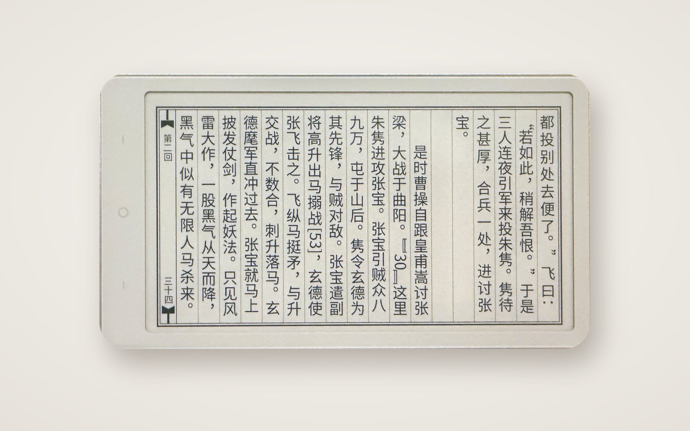
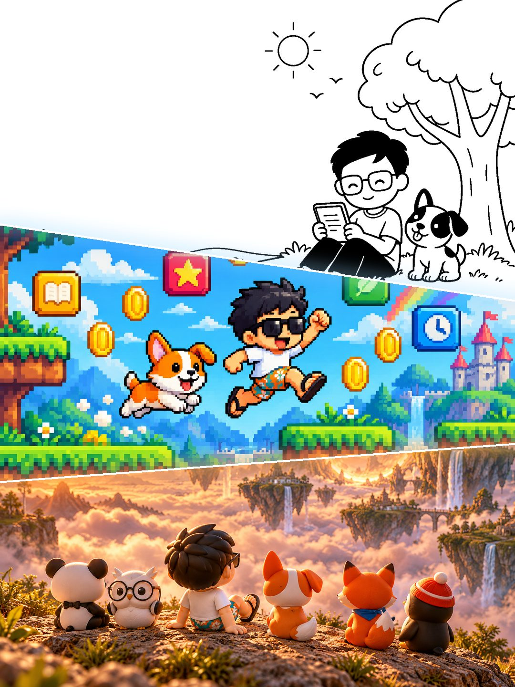
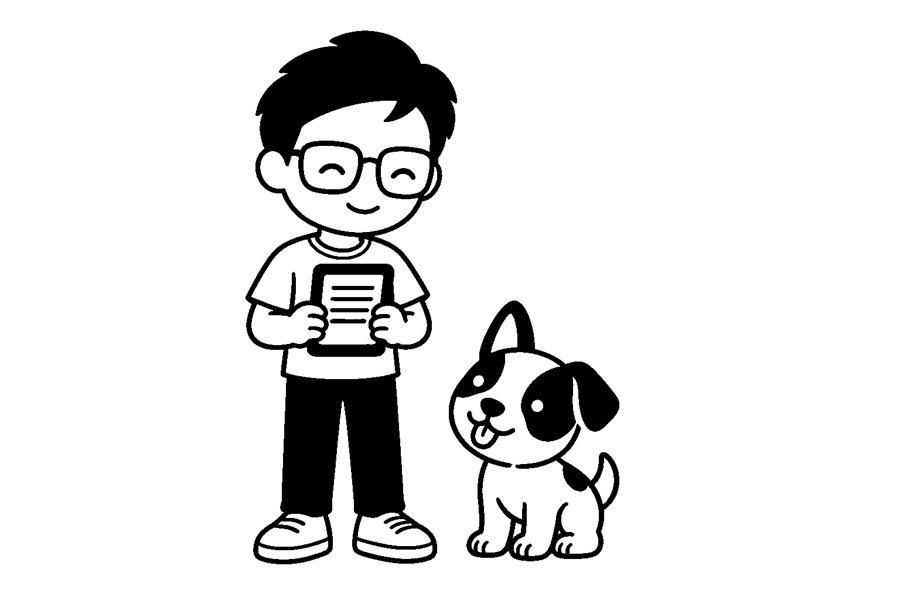

Ricky 和他的小狗，
在给小屏幕造宇宙。
我们做墨水屏上的系统，也在把它带进更多设备。慢一点，好用一点，有趣一点。

现在可用 · 1.2.0
RickyOS
为墨水屏打造的阅读系统，现已支持小纸 Read Pico。
了解 RickyOS →施工中
开发者计划
应用市场正在搭建。Ricky 决定继续躺着，所以这次请你来写。
了解开发者计划 →
正在加载
RickyVerse
一套系统，走进更多设备。平行宇宙的大门，正在一点点打开。
走进 RickyVerse →
关于我们
Ricky AI Studio 是一个很小的工作室。戴眼镜的是 Ricky，旁边那只是他的小狗，它负责催进度，偶尔也负责记 bug。
我们相信设备不必越来越吵。先把一块墨水屏上的阅读做好，再一点点走向更多屏幕。